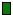
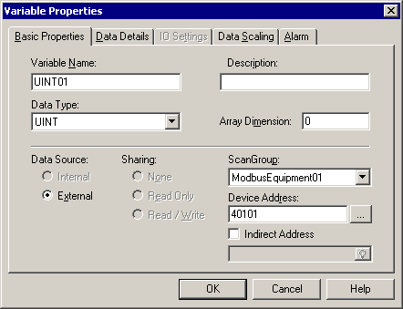
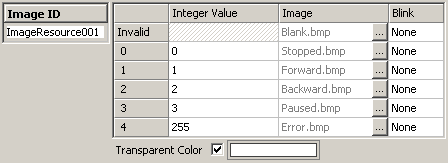
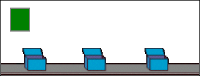
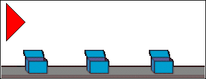
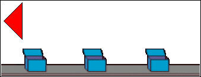
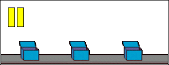
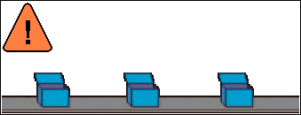

|
|
|
|
|
|
|
|
The following steps describe how to create the Image Display used in the overview example, see Section 14.1, Message/Image Display: Overview: Example.
In the example, an Image Display is used to display the run state of a conveyor belt. The images are similar to the buttons on a VCR. The following table lists the image and state values to use in the Image Display.
|
Image |
Description |
State Value |
|
 |
Stopped |
0 |
|
Moving Forward |
1 |
|
|
Moving Backward |
2 |
|
|
Paused |
3 |
|
|
Error |
255 |
Set up the integer variable that will control the conveyor belt.

For information about adding drivers, see Section 5.2, Setting Up Your Equipment. For information on the variable settings, see Section 6.2.3, Variable Properties.
Click the Image Display icon from the Graphical Objects Parts toolbar.
On the panel, click the start and end of the area where you want the Image Display, and the Image Display Settings dialog box will appear.

For descriptions about the properties in the Image Display Settings dialog box, see Sections 14.2.1 General Tab, 14.2.2 Input Mode Tab, 14.2.3 Visibility Tab, 14.2.4 Advanced Tab.
In the States field, define the number of different images you want to display. In this example, we have 5 states for each of the different conveyor belt conditions.
Click the New Resource icon  , confirm the properties in the New Resource dialog box, and then click OK.
, confirm the properties in the New Resource dialog box, and then click OK.
In the Image Resource editor, define the images and integer values to complete setting up the image display.


All the states must be set up with an image, including the Invalid state.
For information on how to work with the Image Resource editor, see Section 21.1.5, Working with Resources.

The image is stretched or compressed to fit into the drawing area of the Image Display.
Images consume lots of memory. Be careful when you use lots of images as the CF Card/SD Card and internal memory (flash memory) space is limited on the target machine.
0 = Conveyor belt is stopped (safe).

1 = Conveyor belt is in operation, moving forward (unsafe).

2 = Conveyor belt is in operation, moving backward (unsafe).

3 = Conveyor belt is paused (neutral).

255 = Conveyor belt has a problem or error (danger).
